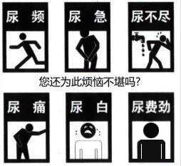

What is the best treatment for healthy men with frequent urination, urgency and incomplete urination?

“Unreasonable + oppression”——Inflammation is out
From the etiology of prostatitis, the prostate is located in an embarrassing part of the entire genitourinary system, the blood flow itself is not smooth, coupled with the daily sedentary pressure on the prostate, and frequent erections causing congestion and obstruction of the prostate, it can be seen that the prostate is In such a harsh environment, inflammation must come quietly.
Everyday bad habits shock your prostate / Or click to call the only official free consultation line of China Great Wall Health Center: 9851349099
Data surveys show that since the 21st century, the number of men suffering from prostatitis has increased in a step-by-step manner. Especially with the development of the Internet age, the situation has become more serious in the past teo years. Prosperity. What is the reason? It can be said that it is entirely caused by bad habits in daily life: alcoholism, heavy smoking, unhealthy diet; sitting for a long time, riding a bicycle, driving, etc., can all induce prostatitis. It has to be said that material life has improved, but physical fitness has declined.
More professional treatment——To cure prostatitis radically, it is necessary to“breakthrough”barrier / Or click to call the only official free consultation line: 9851349099
Experts from China Great Wall Health Center said: Prostatitis is difficult to cure and easy to relapse, which is one of the reasons for the high incidence of prostatitis. However, the reason why prostatitis is difficult to treat and easy to relapse is because the special physiological structure of the prostate makes it difficult for many therapies to solve the lipid disorder of the prostate, and it is difficult for drugs to reach the focus directly. In addition, there are many directly connected organs around the prostate, which is prone to complications.
How to treat healthy men with frequent urination, urgency and incomplete urination?
Experts from China Great Wall Health Center pointed out that whoever solves the problem of prostate lipid envelope preventing drugs from entering the gland will solve the problem of prostatitis that cannot be cured and relapses. Therefore, the key to seeing whether a therapy is effective is whether it can make the drug work.“breakthrough”The prostate physiological barrier acts directly on the lesion. Those who can break through are generally effective treatments.
Experts believe that "the emergence of the prostate treatment system not only breaks through the prostate lipid envelope, but also breaks through the limitations of traditional therapy and achieves the multiple advantages of good treatment effect, fast recovery, and wide adaptability. It is A new milestone in the history of treating prostatitis.
frame man“life gland”Great Health Wall—— Prostate Treatment System
Advantages of the treatment effect: On the 1st day, the perineal pain disappeared; on the 7th day, symptoms such as frequent urination and painful urination were significantly reduced; on the 14th day, groin pain was improved; on the 21st day, nocturia or nocturia was reduced; on the 28th day Within days, all symptoms disappeared and sexual desire increased.
Adaptable to a wide range of people：
1. Men with symptoms such as frequent urination, urgency, and incontinence;
2. Men who experience burning or pain when urinating;
3. Men whose urine is bloody or has a strong smell;
4. Men who experience swelling or throbbing pain in the groin, testicles or perineum;
5. Men with low sexual desire and pain during ejaculation.
A man can completely release his vitality only by releasing the "gland" restriction. If you choose professional treatment, you will find that reproductive health is so simple.
Free consultation appointment line:9851349099
Address：Chuchepati-7, Chabahil, Kathmandu（Near Bhatbhateni）